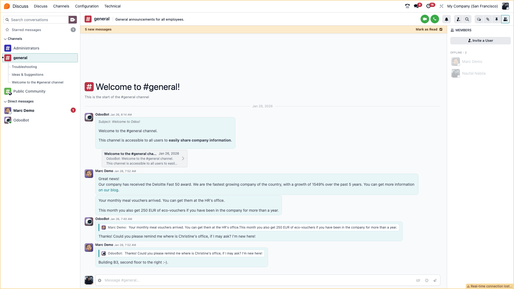

Discuss App adalah aplikasi bawaan Odoo yang berfungsi sebagai pusat komunikasi real-time untuk seluruh pengguna database.
💬 Fitur Utama
- Direct Messages (DM): Chat pribadi antar pengguna (one-on-one).
- Channels: Grup chat untuk tim atau topik tertentu (misal:
#General,#Sales). - Integrasi: Terhubung langsung dengan dokumen Odoo (Quotation, Invoice, dll).

📸 Screenshot: Tampilan awal aplikasi Discuss